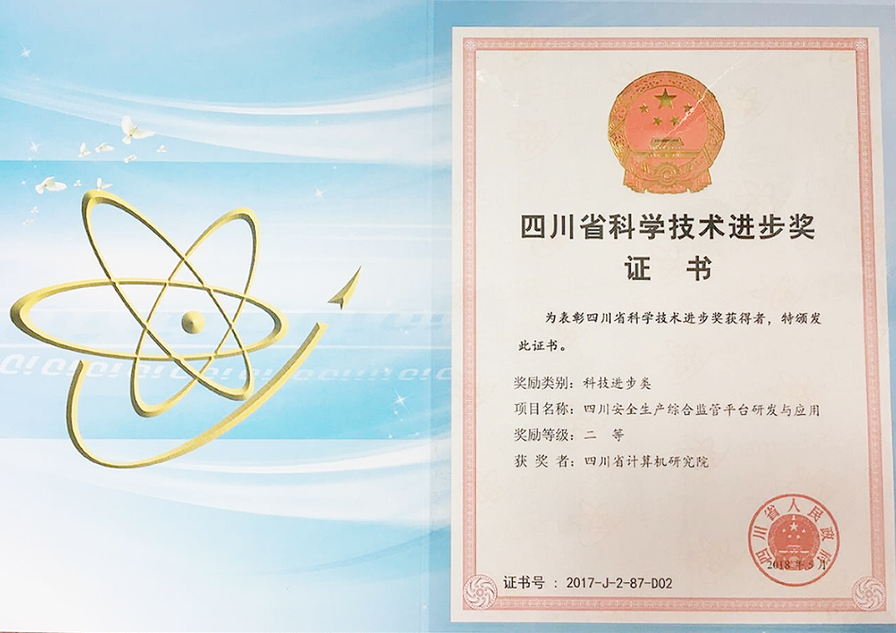

2017年5月30日，省委、省政府在成都举行四川省科学技术奖励大会，隆重表彰为我省科技事业作出突出贡献的科技工作者。
我院参与研发的两项科技成果( "基于大数 据的旅游产业运行监测平台"和“四川安全生产综合监管平台研发与应用”) 均获
颁2017年度四川省科技进步二 等奖,刷新了我院成立以来年度获奖次数与奖励等级的新记录。这两项成果都是我院在“互联网+”
时代积极探索IT技术与国计民生领域重要行业应用深度融合和创新发展的成功实践,也是我院各级领导和员工积极学习和响应习总
书记关于科技强国战略系列讲话精神的具体举措。
我院将再接再厉,戒骄戒躁,秉承勇攀高峰、勇于创新、严谨求实的科研风气,积极布局人工智能、大数据、移动互联网、科
技信息化、旅游信息化等新领域和新业态,研发新成果,打造新平台,为我省建设国家创新驱动发展先行省、推动治蜀兴川再上新
台阶做出应有的贡献。

基于大数据的旅游产业运行监测平台
基于大数据的旅游产业运行监测平台